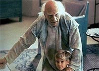
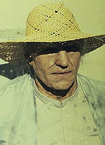
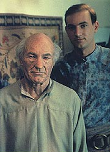
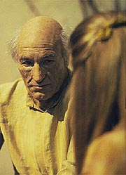

|
MANCHETE
DO EPISÓDIO
História
mais tocante da Nova Geração
leva Picard à vida que ele não teve
Episódio
anterior | Próximo
episódio
Sinopse:
Data Estelar: 45944.1.
Uma sonda alienígena se posiciona à frente da Enterprise e libera
um raio de partículas nucleônicas que penetra os escudos da nave.
Focadas unicamente em Picard, as partículas fazem com que ele fique
inconsciente. Ao acordar, ele se encontra em um mambiente pouco
familiar, sendo tratado por uma mulher, Eline.
 Ela
diz a ele que seu nome é Kamin, e que é seu marido há três anos.
Ela também afirma que ele esteve doente e deve estar experimentando
algum tipo de amnésia. Picard logo descobre que vive no planeta
Kataan, onde trabalha como um ferreiro. Sua confusão é maior
quando ele nota que Eline usa uma jóia que é uma réplica exata da
sonda que a Enterprise encontrou. Ela diz que Picard deu a ela o
colar como um presente.
Na nave, a tripulação é incapaz de acordar o capitão. Percebendo
que a emissão de partículas ligada a ele pode estar mantendo sua
vida, eles temem que cortar o raio possa matá-lo. Apenas alguns
minutos se passaram, mas, em Kataan, já são cinco anos depois. Lá,
Picard começa a aceitar sua vida. Ele desenvolve uma solução para
a seca que está afetando o planeta, mas suas idéias avançadas são
motivo de deboche para os líderes daquela primitiva sociedade.
Entretanto, sua vida não é desprazeirosa --o capitão começa a se
sentir feliz com sua mulher. Mas na Enterprise, Worf insiste para
que eles cortem o raio e interrompam o "ataque" a Picard.
Quando eles o fazem, o pulso de Picard reduz drásticamente. Em
Kataan, onde mais sete anos se passaram, ele cai no chão. Agindo
rapidamente, a tripulação restaura o feixe. De volta em Kataan,
outros 12 anos se passaram, e Picard já tem dois filhos. A seca
continua a piorar, e a filha adolescente de Picard, Meribor, percebe
que seu planeta está condenado. Ao mesmo tempo, Geordi e Data são
capazes de descobrir a origem da sonda, um planeta que foi destruído
em uma explosão de supernova há cerca de mil anos.
 Em
Kataan, os anos continuam a avançar. Picard continua sua busca por
uma solução para a seca, mas suas sugestões não fazem sucesso
entre as lideranças. Mais tarde, Eline morre, assim como o melhor
amigo de Picard, Batai. Seu primeiro neto nasce.
O tempo decorrido na Enterprise é de apenas algunsminutos.
Entretanto, Beverly fica assustada quando descobre que a taxa metabólica
de Picard é equivalente à de um homem de 80 anos. Na verdade,
Picard tem 85 anos em Kataan, onde a seca já quase destruiu
completamente o planeta.
Seus filhos e netos o convencem a acompanhar o lançamento de um míssil
--um evento pelo qual todos estão animados. Picard não entende a
razão, sabendo que o míssil não poderá fazer nada para salvar o
planeta e seu povo. Entretanto, quando o míssil decola, sua família,
com a ajuda do espírito de Eline, explica a Picard que eles estão
lançando uma sonda para o futuro, para encontrar alguém que irá
trazê-los imortalidade ao contar a outros sobre seu planeta depois
que ele for destruído.
Picard descobre que o míssil na verdade carrega a sonda que o levou
a Kataan 30 anos atrás. Quando isso acontece, ele acorda na
Enterprise, impressionado ao descobrir que esteve desacordado por
apenas 25 minutos, tempo durante o qual ele viveu praticamente uma
vida toda.
Comentários:
Esqueça análises
racionais --"The Inner Light" foi feito para ser
visto com o coração. Não a nada que se diga aqui que possa estar
à altura do que o episódio desperta no telespectador. Não se
trata de um episódio cabeça, cheio de tramas intrigadas e
reviravoltas, mas apenas de uma história extremamente simples,
cheia de emoção.
 O
que não quer dizer que não seja absolutamente brilhante, inclusive
enquanto enredo. Pensando sobre o conceito de ficção científica
em si, que história maravilhosa temos em mãos: uma sonda que
propaga as lembranças de seu povo já extinto do melhor modo possível,
fazendo com que alguém viva uma vida toda como se pertencesse ao
planeta deles. Um sonho, sem dúvida, mas o mais intenso que alguém
já pensou ser possível ter.
O episódio é 100% sustentado por Patrick Stewart, em uma das atuações
mais brilhantes que ele teve em A Nova Geração. O elenco
convidado também tem importância, e não decepciona. Em compensação,
o resto da turma regular da série pôde praticamente tirar folga.
Mas valeu a pena: este segmento é possivelmente o melhor insight já
dado sobre o capitão Picard.
Temos uma chance de vê-lo vivendo a vida que nunca teve --não por
alguns momentos, como no filme "Generations", mas
realmente por uma vida toda. Não há um ser humano que consiga
acompanhar "The Inner Light" sem ficar com os olhos
molhados.
A estrutura da narrativa é maravilhosa: a forma com que se costura
o tempo na Enterprise e o tempo em Kataan, os pontos de contato
entre os dois ambientes, as sequências altamente emotivas e o final
arrebatador são capazes de abalar o mais frio dos corações. O
relacionamento de Kamin com seus filhos e netos é muito
interessante e comovente de se observar. E vê-lo encontrar todos os
seus entes queridos, mortos ou não, na cena final, enquanto ele
descobre o que está de fato acontecendo e que seu "delírio"
de ser capitão de uma nau que navegava pelas estrelas era de fato a
verdade, contém uma força própria inestimável. A cena vale o
episódio, cortesia de Patrick Stewart.
 Outro
elemento extremamente importante para o sucesso do episódio é a música.
O tema predileto de Kamin com sua flauta é de uma singeleza e uma
tristeza próprias, que servem muito bem como tema para o próprio
episódio. Independentemente de outras orquestrações, esta é uma
das marcas que "The Inner Light" deixa para o
restante da série.
Finalmente, vale ressaltar que o profundo impacto que essa experiência
teve no capitão Picard não será esquecido facilmente. Ele até
incorpora a flauta de Kamin a seu repertório de apetrechos, e chega
a tocá-la ocasionalmente a bordo da Enterprise --sinal de que ele
nunca se esquecerá de Kataan. Nem nós.
Citações:
Kamin - "Hey,
that's my hobby. Find your own."
("Ei, esse é o meu hobby. Encontre o seu.")
Meribor - "Well, you're the one who taught me. Don't
complain if you turn me into a scientist."
("Bem, você que me ensinou. Não reclame se você me
transformar numa cientista.")
Trivia:
 Considerado por muitos como o melhor episódio da Nova Geração
e um dos melhores de toda a saga de Jornada nas Estrelas, "The
Inner Light" mistura a afetividade de "Family"
com os elementos de rompimento da realidade de "Yesterday's
Enterprise". Uma história simples onde Picard experimenta
coisas que não tem em sua vida na Frota Estelar: uma esposa,
filhos, estabilidade e um verdadeiro lar.
Considerado por muitos como o melhor episódio da Nova Geração
e um dos melhores de toda a saga de Jornada nas Estrelas, "The
Inner Light" mistura a afetividade de "Family"
com os elementos de rompimento da realidade de "Yesterday's
Enterprise". Uma história simples onde Picard experimenta
coisas que não tem em sua vida na Frota Estelar: uma esposa,
filhos, estabilidade e um verdadeiro lar.
O
filho do personagem de Patrick Stewart neste episódio, Batai, é
interpretado pelo filho de Patrick Stewart na vida real, Daniel
Stewart.
Margot Rose, que participa neste episódio como Eline, atuou como
uma prostituta no filme "48 Horas". Neste filme ela tinha
uma colega de profissão que era interpretada por Denise Crosby, a
Tasha Yar da Nova Geração.
A música
que Picard toca em sua flauta foi criada por Jay Chattaway, o
compositor das músicas deste episódio. Quando das comemorações
dos 30 anos de Jornada, em 1996, a GNP Crescendo Records lançou
um CD chamado "The Best of Star Trek", com diversas músicas
de episódios das diversas séries do franchise, e entre elas estava
a música de "The Inner Light". Essa música
tornou-se muito querida entre os fãs, e até no Brasil o músico e
trekker Marcos Kleine fez sua versão, executada em convenções
realizadas em São Paulo. A bela música voltará a ser ouvida no
episódio "Lessons", do
sexto ano da série.
Ficha
técnica:
História de Morgan Gendel
Roteiro de Morgan Gendel e Peter Allan Fields
Direção de Peter Lauritson
Exibido em 01/06/1992
Produção: 125
Elenco:
Patrick Stewart como
Jean-Luc Picard
Jonathan Frakes como William Thomas Riker
Brent Spiner como Data
LeVar Burton como Geordi La Forge
Michael Dorn como Worf
Gates McFadden como Beverly Crusher
Marina Sirtis como Deanna Troi
Elenco convidado:
Margot Rose como Eline
Richard Riehle como Batai
Scott Jaeck como administrador
Jennifer Nash como Meribor
Patti Yasutake como enfermeira Alyssa Ogawa
Daniel Stewart como jovem Batai
Episódio
anterior | Próximo
episódio
|